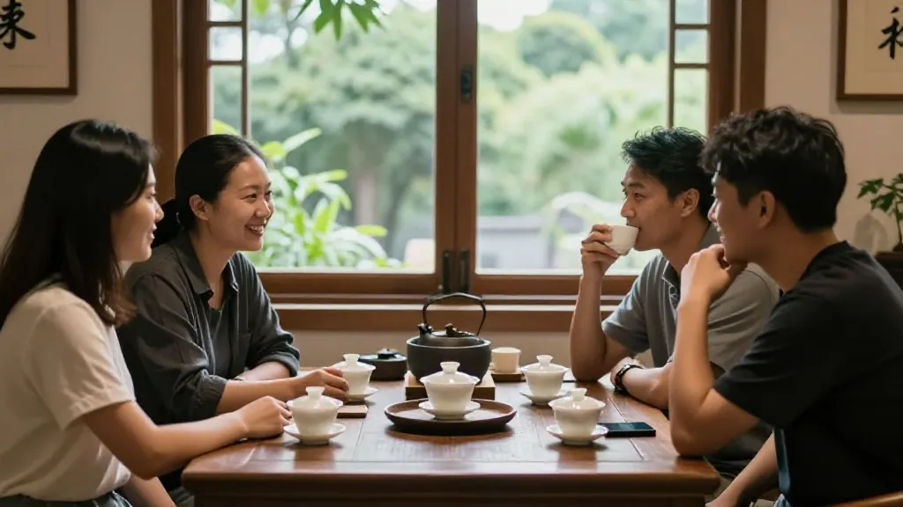

凤凰单丛茶马古道｜为什么这盏茶能香千年？惠州茶行阿凤姐带你读懂单丛老茶
📍 惠州买茶找阿凤姐｜🍵 凤凰单丛老茶专场｜📅 2026年9月2日
开篇Q&A：关于凤凰单丛老茶，姐妹们最常问的几件事
Q1：凤凰单丛能放多久？会过期吗？
阿凤姐一句话讲透：「<strong>凤凰单丛没有保质期，越陈越甘，只是每年要烤一次，让香气醒过来。</strong>」你睇阿公留低嘅老茶，放咗几十年反而更醇——好的茶，经得起时间。关键係保存要密封、避光、防潮，每年用炭火轻焙一次，老茶嘅韵味精会返嚟。如果你屋企有存放咗几年嘅单丛，唔使担心过期，反而可能系宝藏。
Q2：惠州哪里能买到正宗凤凰单丛老茶？
来<strong>阿凤姐茶叶店</strong>！地址就喺<strong>惠州市惠城区东湖花园一区沿江商铺89-136（凤凰茶业）</strong>，每天<strong>9:00-21:00</strong>营业，全年无休。店里主打潮州凤凰单丛全系列——<strong>鸭屎香、蜜兰香、老枞、大乌叶</strong>，从当年新茶到陈年老茶全部有货。酒楼、茶馆、奶茶店大批量订货都接，欢迎来试饮。电话：<strong>13435567385</strong>，微信同号，支持快递全国。
Q3：凤凰单丛冷泡和热泡有什么区别？
阿凤姐教你分辨：
1. <strong>100度热泡</strong>：蜜兰香高扬张扬，茶汤金黄透亮，回甘猛烈，适合秋冬饮
2. <strong>4度冷泡</strong>：清甜解暑，香气内敛优雅，饮落去似山泉般甘冽，适合夏天
3. <strong>同一款茶</strong>，热泡系「浓情蜜意」，冷泡系「淡雅清新」——茶系同一片茶，只系时代畀咗佢唔同嘅喝法
4. <strong>新手建议</strong>：想试冷泡，建议先拣蜜兰香或者鸭屎香，花香型嘅茶冷泡效果更好
🐴 第一幕：古道铃声——凤凰单丛从茶马古道走来
很久以前，潮州凤凰山嘅茶农们背着竹篓，踏上<strong>茶马古道</strong>。山路崎岖，马蹄声碎，一片片茶叶随着古道延伸到远方。
阿公讲，嗰阵时嘅凤凰单丛，係用<strong>竹箬包裹、用马驮到各地</strong>嘅。茶商们凭住一张「<strong>茶引</strong>」——写住产地同数量嘅一张纸——就能让茶叶穿越千山万水。
「民国时候，<strong>一张茶引换一担谷子。</strong>」阿公眯住眼，「茶叶香唔香，呃唔到人。」
我小时候唔明，点解爷爷总要把茶叶放喺阳光下晒，又收进紫砂罐里。后来先明白——<strong>好嘅茶，经得起时间</strong>。凤凰单丛冇保质期，越陈越甘，只系每年要烤一次，让香气醒过来。
💡 阿凤姐小贴士：凤凰单丛老茶嘅「醒茶」好紧要！每年用<strong>炭火轻焙</strong>15-20分钟，就可以将沉睡嘅香气唤醒。如果唔烤，茶叶会返青，香气变浊。呢个方法阿公传畀我，我又传畀每一个买老茶嘅客人。
🍵 第二幕：老茶农嘅手——一盏单丛连接三代人
去年，一个酒楼老板嚟我店里品茶。佢姓张，喺惠州做咗二十多年餐饮。张老板饮完一杯<strong>老枞</strong>，沉默咗好耐。
「呢个味道，似极咗我爷爷泡嘅茶。」佢讲，「嗰阵时佢都系咁温杯、高冲，动作一模一样。」
我问佢要不要带啲返去。佢摇头：「我唔识茶，但我识人。能在惠州揾到正宗嘅凤凰山茶，唔容易。」
后来张老板做咗我嘅大客户。佢嘅酒楼用我嘅凤凰单丛待客，话系「让客人饮出历史感」。一个好茶客背后，往往系一群识茶嘅人。
🎯 划重点：<strong>凤凰单丛嘅魅力在于传承</strong>——阿公用嗰把紫砂壶泡嘅茶，同阿凤姐今日用嘅盖碗，冲出来嘅系同一种山韵。从唐朝古道到今日嘅直播间，那一抹「香唔得」嘅香气从未改变。真嘅嘢，穿越时间同空间都系真嘅。
❄️ 第三幕：冷泡与直播——凤凰单丛嘅新喝法
今日嘅市场变咗。后生仔钟意<strong>冷泡</strong>，用冷水泡四个钟，饮落去清甜解暑。我最初觉得奇怪——凤凰单丛要100度先得出香，冷泡得唔得嘅？
试过先至知，<strong>好茶唔怕水温低</strong>，只系风味唔同。100度泡出来系蜜兰香嘅高扬张扬，冷泡出来系清雅嘅甘甜。茶仲系嗰片茶，只系时代畀咗佢唔同嘅喝法。
上个月，一个奶茶店老板揾到我。佢想做一款「能饮出潮州味」嘅单丛饮品，试咗三个产地嘅茶样，最后拣咗我嘅茶叶。
「<strong>蜜兰香最正</strong>，」佢讲，「客人都话好饮，回头客多咗三成。」
💡 阿凤姐小贴士：冷泡凤凰单丛有技巧！<strong>茶叶与冷水比例1:100</strong>（比如5克茶配500ml水），放冰箱浸泡4-6小时。建议拣花香型单丛（如蜜兰香、桂花香），冷泡后花香清幽、入口甘甜，完全唔苦涩。新手可以先试小包装，唔好浪费好茶。
🫖 第四幕：壶中岁月——为什么酒楼茶馆都选凤凰单丛？
而家，每当我用嗰把用咗几十年嘅紫砂壶泡茶，总会想起阿公嘅话：「<strong>壶系有记忆嘅，泡过嘅茶都喺里面。</strong>」
茶香都系咁。
从唐朝古道到今日嘅直播间，从马背上嘅竹篓到精美嘅礼盒，凤凰单丛行过千年。今日我嘅客户有酒楼、茶馆、奶茶店，仲有送礼嘅礼盒商。佢哋都话，从我呢度拿嘅茶，客户饮完想再饮。
<strong>点解酒楼茶馆都选凤凰单丛？</strong>
- ✅ <strong>香气浓</strong>：蜜兰香、鸭屎香香气高扬，一冲出来成间房都香
- ✅ <strong>回甘久</strong>：饮完口齿留香，客人印象深
- ✅ <strong>耐泡10次以上</strong>：酒楼茶馆用量大，性价比高
- ✅ <strong>回头率高</strong>：客人饮过好茶，下次会专程嚟
🎁 阿凤姐推荐｜不同场景嘅凤凰单丛选茶指南
| 场景 | 推荐茶款 | 原因
|------|---------|------
| 🏠 <strong>自己饮（日常）</strong> | 蜜兰香、鸭屎香 | 性价比高，香气足，新手友好
| 🏢 <strong>酒楼茶馆待客</strong> | 老枞蜜兰香、大乌叶 | 耐泡、香气持久、客人好评率高
| 🧋 <strong>奶茶店原料</strong> | 鸭屎香、蜜兰香 | 花香浓郁，做成饮品风味突出
| 🎁 <strong>中秋送礼</strong> | 老枞礼盒、凤凰山风景礼盒 | 体面大方，有文化感
| 🧊 <strong>夏天冷泡</strong> | 桂花香、蜜兰香 | 花香型冷泡后清甜不苦涩
🎀 姐妹们收藏好！无论系自己饮、开店用、定系送礼，揾阿凤姐帮你配茶，一定唔会错。
📝 阿凤姐小课堂｜老茶选购与保存避坑指南
姐妹们记住呢四点，买老茶再也唔怕被坑：
✅ <strong>睇年份</strong>：真正嘅老茶要有「焙火记录」，每年几时烤、烤几度都要清楚，唔好买来历不明嘅"老茶"
✅ <strong>闻干香</strong>：好嘅老茶干香沉稳，带陈香、药香、木质香；如果有霉味、杂味，一定系保存唔好
✅ <strong>试汤色</strong>：老茶汤色橙红透亮，唔会浑浊；如果汤色暗哑，可能存放环境太湿
✅ <strong>摸叶底</strong>：冲泡后叶底柔软有弹性，说明茶叶活性好；如果叶底硬脆，可能系假老茶
📍 惠州买茶去哪？阿凤姐茶叶店欢迎你
🏪 店铺：阿凤姐茶叶店（惠州东平老茶街·凤凰茶业）
📍 地址：惠州市惠城区东湖花园一区沿江商铺89-136
📱 电话：13435567385（微信同号，支持全国快递）
⏰ 营业时间：每天9:00-21:00，全年无休
🚗 停车：东湖花园沿街有停车位，导航搜索「凤凰茶业」即可
🍵 店内主营：
- 潮州凤凰单丛全系列（鸭屎香、蜜兰香、黄枝香、芝兰香、老枞等）
- 新会陈皮（五年陈、十年陈、十五年陈）
- 凤凰单丛批发（酒楼、茶馆、奶茶店长期供货）
- 中秋茶礼定制（企业团购、个人送礼均可）
📝 下回预告：凤凰单丛嘅「老丛」系咩？点解老丛茶农都讲「树龄唔够，味道出唔嚟」？
#凤凰单丛茶马古道 #凤凰单丛能放多久 #冷泡凤凰单丛 #凤凰单丛批发 #惠州茶叶店 #老茶传承 #民国茶引 #惠州买茶去哪 #潮州凤凰山 #蜜兰香老茶 #单丛茶知识 #茶文化
✍️ 作者： 阿凤姐，惠州茶叶店主理人，专注潮州凤凰单丛与新会陈皮
🗓️ 发布时间： 2026年9月2日